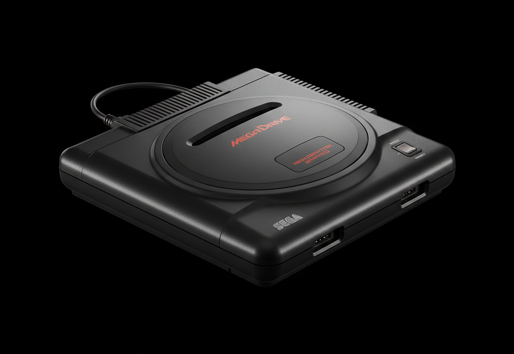

The 16-Bit Powerhouse
Launched in Japan in 1988, the Mega Drive (Genesis in North America) defined the "console wars". It was the machine that brought the "cool factor" to gaming, challenging the status quo with fast-paced arcade ports and an edgy marketing campaign that "did what Nintendon't".

The Origin
Arcade DNA
Designed to bring Sega's System 16 arcade board experience home, it featured the powerful Motorola 68000 CPU. It allowed for nearly perfect conversions of hits like Altered Beast and Golden Axe.
The Peak
Blast Processing & Sonic
The arrival of Sonic The Hedgehog in 1991 changed everything. With its high-speed scrolling and "Blast Processing" capabilities, the Mega Drive became the undisputed king of the early 90s action games.
The Demise
Add-on Overload
While successful, the ecosystem became fragmented with the 32X and Sega CD expansions. These high costs and technical confusion eventually led Sega to focus their resources on the next generation.
Pro Tip for Collectors
Always check for the "High Definition Graphics" text on the Model 1 consoles! These early units are famous for having the best audio chips (YM2612), providing that crunchy, iconic FM synth sound.